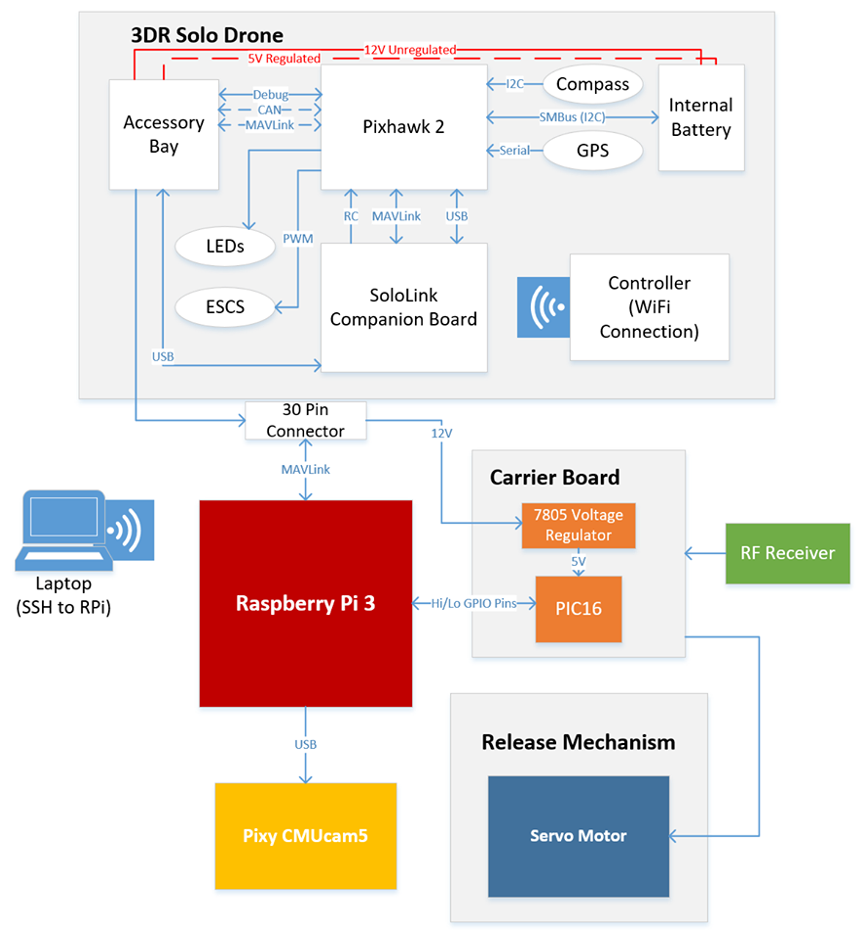
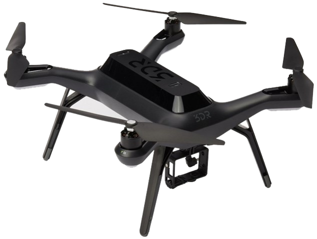
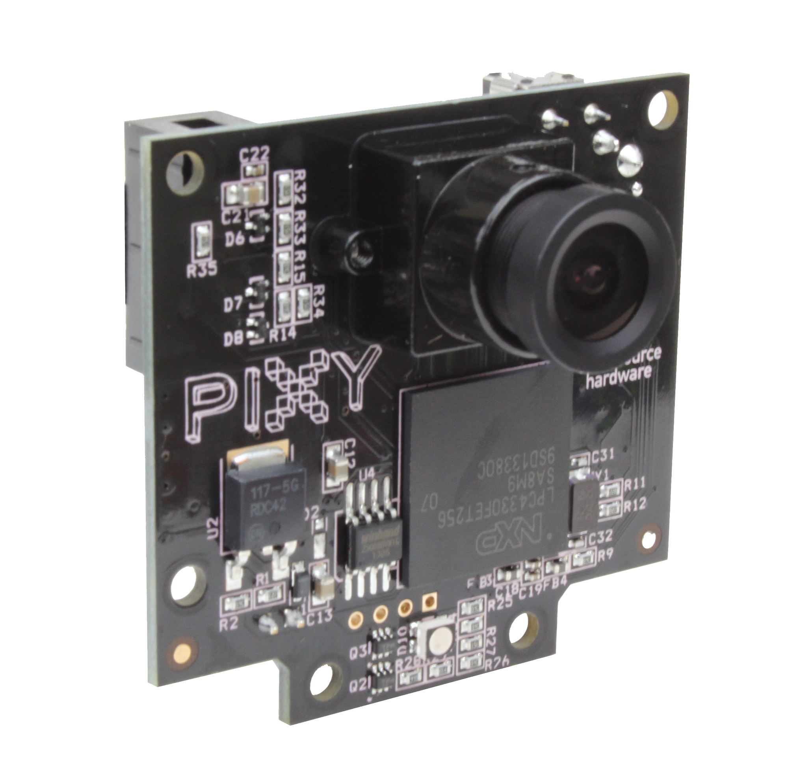
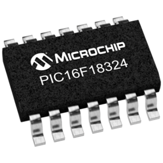
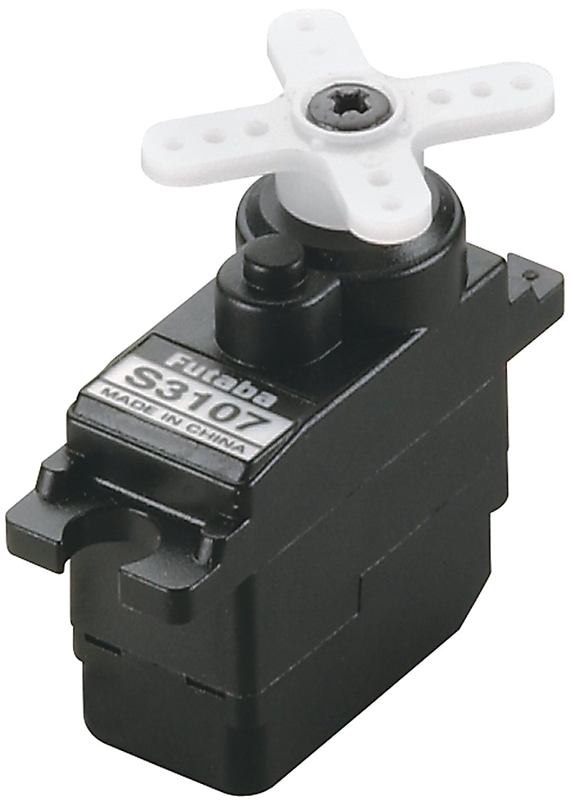
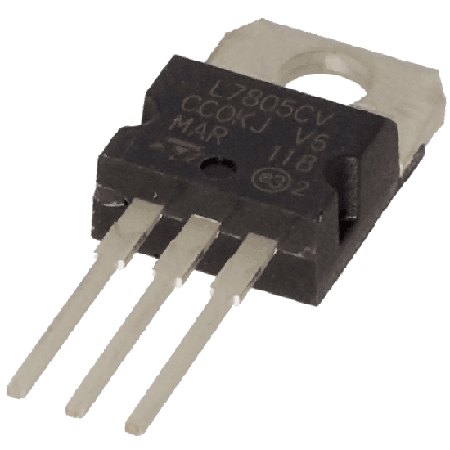
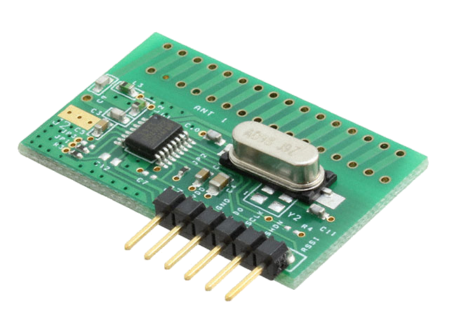

Hardware
3DR Solo Drone
Raspberry Pi 3 (Model B)
Pixy CMUcam5 Vision Sensor
PIC Microcontroller
Servo Motor
3D-printed Release Mechanism
Voltage Regulator
RF Receiver

3DR Solo Drone

The 3DR Solo Drone is the main chassis of our project. It contains the power supply that will power all the components in our design. The 3DR has a compass and GPS for navigating, electronic speed (ESCS) for controlling the motors of the propellers for flight, and the SoloLink Companion Board and accesory bay for connecting to the other components of this design. It also has a Pixhawk as its flight controller. The external controller establishes a connection to the drone via WiFi and will be used in case of emergencies.
Raspberry Pi 3 (Model B) and Carrier Board

A single-board computer that serves as the brains of the system and processes all the navigation and image detection written in Python. The Raspberry Pi and a Printed Circuit Board (PCB) as our carrier board will distribute power received from the 3DR Solo Drone and will be the main connection point for all other components.
Pixy CMUcam5

An open-source vision sensor that is capable of detecting the location of the object based on its color. Once over the waypoint, the vision sensor will scan the field of view to find the identified waypoint marker. It will then calculate the pixel-to-centimeter ratio based on the actual size of the target and therefore determine the distance from the target.
PIC Microcontroller

A 16-bit microcontroller that sets the proper PWM signals to rotate the servo motor to the assigned arcs as well as detect the rising edges of the radio signals being broadcasted to identify which frequency is being emitted for the second challenge.
Servo Motor

The servo motor rotates exactly 90 degrees to each compartment to release a payload. Attached is an enclosed 3D-printed rotary mechanism that holds the designated payload to be delivered. A PIC microcontroller sends the corresponding PWM signals to the servo motor which rotates the 3D-printed dispenser. Each single rotation will drop a payload at each waypoint once the drone has confirmed the location.
Voltage Regulator

Allows the components to safely connect to the drone's unregulated voltage source.
RF Receiver

A small electronic device that receives radio frequency signals from a transmitting beacon.